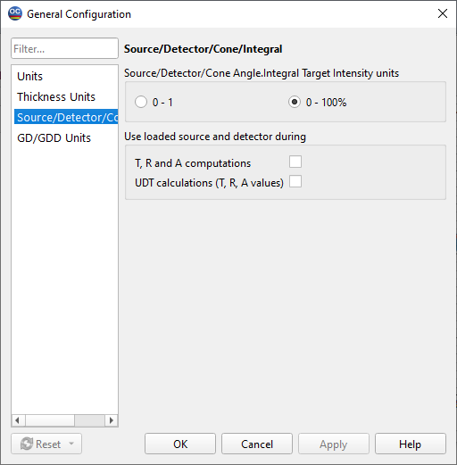

Source/Detector options
Source/Detector options
Navigation: OptiChar Menu Commands > Configuration Menu > |
` <i dh_config_thickness_units.htm>`__ ` <idh_menu_configuration.htm>`__ ` <coloroptions.htm>`__ |
Source/Detector units group allows the user to select preferred units for light source and detector spectral power distributions.
